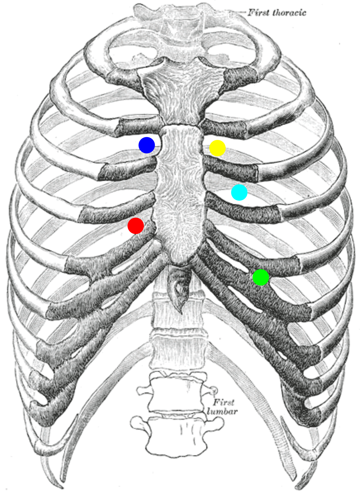

檢查
Cardiac auscultation ｜ 心臟聽診與心雜音 · Cardiac Auscultation 筆記更新 2026-07-26· 整理狀態：可用
加入閱讀清單 其他名稱 5 心臟聽診 · 心雜音 · Heart murmur · Murmur maneuvers · Carvallo sign
判讀速查
描述一個雜音的五件事 ：位置 · 時間點（收縮／舒張／連續） · 強度（Levine 1–6） · 音調與音色 · 傳導方向
決策切點 ：所有舒張期雜音 、連續性雜音 、強度 ≥3/6 的收縮期雜音 、任何合併症狀的雜音 → 一律安排 Echocardiography
紅旗 ：新出現的雜音 ＋ 發燒（想感染性心內膜炎）；新出現的雜音 ＋ 胸痛或休克（想腱索斷裂、乳頭肌斷裂、心室中膈破裂、主動脈剝離）
原理 Principle
它到底在量什麼？為什麼這個聲音能反映那件事？
flowchart TD
A["瓣膜狹窄或逆流<br/>或分流"] --> B["血流速度上升<br/>產生亂流"]
B --> C["組織振動<br/>形成雜音"]
D["通過的血量"] --> B
E["壓力梯度大小"] --> B
C --> F["音量與時長<br/>反映血量與梯度"]
classDef key fill:#263238,stroke:#000,color:#fff,font-weight:bold
class F key
筆記中的流程與關係 什麼時候做
當你想回答「這個病人的呼吸困難／胸痛／暈厥，是不是瓣膜或分流造成的 」時
當你想回答「已知的瓣膜病變是不是惡化了 」時（音量、時長、傳導範圍的變化）
當你需要在床邊區分兩個雜音相似的病 時（例如 Aortic stenosis↗ vs HCM ）——這是聽診勝過超音波的唯一場合：即時、可誘發
怎麼做 / 病人準備
項目
內容
部位
四個標準區：RUSB（右上胸骨旁第二肋間）、LUSB（左上胸骨旁第二肋間）、LLSB（左下胸骨緣第四肋間）、心尖（左鎖骨中線第五肋間）
聽診器面
膜面 聽高頻（大部分收縮期雜音、AR）；鐘面輕觸 聽低頻（MS 的隆隆聲、S3、S4）
姿勢
左側躺 放大心尖低頻音（MS、S3）；坐起前傾並吐氣末閉氣 放大 AR
必做動作
至少做 Valsalva／站立 與 蹲下 ，以及注意呼吸相

胸壁聽診點（面向病人）：藍＝aortic（右第 2 肋間）、黃＝pulmonic（左第 2 肋間）、青＝Erb point（左第 3 肋間）、紅＝tricuspid（左下胸骨緣）、綠＝mitral apex（左第 5 肋間鎖骨中線）。這些是聲音傳導最佳處，不是瓣膜的解剖位置。Source: Wikimedia Commons — Heart sounds auscultation areas （public domain）。
判讀 Interpretation
依時間點分類
時相
音色
代表
全收縮期（holosystolic，音量平均）
風吹聲
MR、TR、VSD
收縮中期（漸強漸弱 crescendo-decrescendo）
粗糙
AS、PS、HCM
收縮末期（前有喀嚦聲 click）
咻咻聲
MVP
舒張早期（漸弱 decrescendo）
高頻風吹聲
AR 、PR（Graham-Steell）
舒張中期
低頻隆隆聲 MS 、TS；Austin-Flint（重度 AR 造成）
連續性（跨過 S2）
機械聲、像火車過山洞
PDA
強度 Levine 分級
級
定義
1
很難聽到，要專心才聽得出來
2
一般環境下可輕易聽到
3
大聲但摸不到震顫
4 摸得到震顫（palpable thrill） ——3 與 4 的分界就在這裡
5
聽診器只輕觸胸壁就聽得到
6
聽診器離開胸壁仍聽得到
誘發試驗：這一節是本篇的核心
所有 maneuver 題都由下表推出。
動作
血行動力改變
變大 聲
變小 聲
蹲下 Squatting
前負荷 ↑（併後負荷 ↑）
AS、MS、AR、MR、TR、VSD
HOCM、MVP
握拳 Handgrip
體循環 後負荷 ↑AR、MR、VSD
HOCM、MVP 、AS
Valsalva、突然站起
前負荷 ↓
HOCM、MVP AS、MS、AR、MR、TR、VSD
Amyl nitrite
後負荷 ↓
HOCM、MVP 、ASAR、MR、VSD
吸氣（Carvallo sign） 右心回流 ↑、左心前負荷 ↓
所有右心雜音 ：TR、TS、PS、PR左心雜音略減
干擾與偽陽性
會讓結果失真的因素
往哪個方向偏
高心輸出狀態（發燒、貧血、甲亢、懷孕）
產生功能性收縮期雜音 ，容易誤判為器質性病變
嚴重的瓣膜狹窄伴心輸出量低下
雜音變小甚至消失 ——「安靜的 AS」反而更危險
肥胖、肺氣腫、大量心包積液
心音整體變遠、雜音被低估
心房顫動
逐拍血量不同，雜音強度忽大忽小
心搏過速
舒張期被壓縮，舒張期雜音難以辨認
與相關檢查的取捨
檢查
優點
缺點
什麼時候選它
本篇 聽診 即時、零成本、可做誘發試驗
高度依賴操作者；無法定量
第一線篩檢；床邊區分 AS 與 HOCM
Echocardiography 定量嚴重度、看結構與功能
需儀器與時間
任何舒張期／連續性／≥3 級收縮期雜音，或有症狀者
ECG↗ 提供心室肥厚、心律等旁證
不能診斷瓣膜病
併行
禁忌與陷阱
絕對不可
情境
絕對不可
為什麼
該做什麼
聽到任何舒張期雜音
當作功能性雜音而不追
舒張期雜音幾乎都是病理性的
一律安排超音波
疑似重度 AS 或 HOCM 阻塞
為了誘發雜音而讓病人反覆用力 Valsalva
可能誘發低血壓或暈厥
在監測下小心進行；有暈厥病史者直接做超音波
新雜音 ＋ 發燒
只當作病毒感染觀察
感染性心內膜炎會迅速破壞瓣膜
抽血培養 ＋ 超音波
常見錯誤
把 TR 在吐氣時變大 記成正確——右心雜音是吸氣 變大（Carvallo）。
把 amyl nitrite 的方向記成跟握拳一樣——它是後負荷↓ ，跟握拳相反。
只在心尖聽而沒有用鐘面、沒讓病人左側躺，於是漏掉 MS。
只在休息時聽 HOCM，沒做 Valsalva，於是把阻塞型判成非阻塞型。
相關連結
HCM — 與 AS 最常互當錯誤選項；靠 maneuver 反應分開Aortic stenosis↗ — 蹲下變大、雜音在 RUSB 並傳向頸部Echocardiography — 聽到紅旗雜音後的下一步Chest pain↗ — 由主訴進入的路徑
SOURCE & CONTEXT
來源與原始筆記 113-1 醫學(三) 11 延伸；Harrison's 心血管理學檢查章
下載這篇 Markdown ↗ 網站保留原筆記的內容與整理狀態。